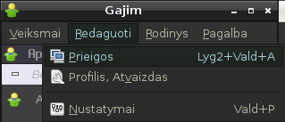
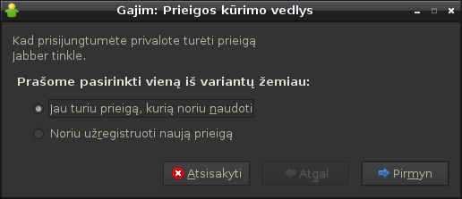
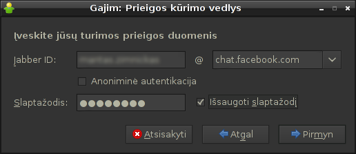
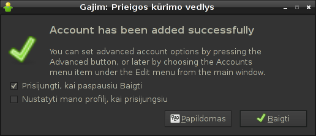
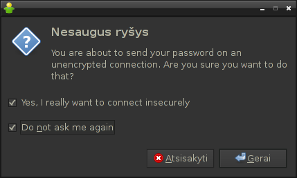

Facebook jau palaiko Jabber/XMPP pokalbių protokolą!
Puiki žinia, Facebook pokalbiai jau veikia per Jabber/XMPP protokolą!. Visiems, kas nekantrauja tai išbandyti, reikalingus prisijungimo duomenis rasite čia (reikia būti prisijungus prie Facebook):
Kas yra tas Jabber/XMPP?¶
Jabber/XMPP yra pokalbių protokolo atviras standartas. Šiuo metu tai yra de-facto pokalbių protokolo standartas, labiausiai prigijęs ir daugiausiai naudojamas. Šio standarto dėka, visiškai skirtingos programos, vadovaudamosi nustatytomis protokolo taisyklėmis gali kurti savo programas, kurios sėkmingai tarpusavyje susiderina. Tai kažkas panašaus į XHTML standartą, daugelis naršyklių laikosi šio standarto, todėl nereikia skirtingų svetainių atidarinėti su skirtingomis naršyklėmis.
Jabber/XMPP atveju, daugelis pokalbių programų kalba ta pačia kalba, todėl pavyzdžiui Gajim programos naudotojai gali sėkmingai bendrauti su Google Talk naudotojais, o dabar lygiai taip pat atsirado galimybė bendrauti ir su Facebook svetainės lankytojais.
Pastaba. Lietuvoje populiari pokalbių programa Skype, nepaiso jokių standartų, todėl Skype nėra suderinamas su jokiomis kitomis programomis ar protokolais. Skype naudotojai gali bendrauti, tik su Skype naudotojais. Padėti pasikeistų, jei Skype pagaliau pradėtų paisyti standartų ir taip pat naudotų Jabber/XMPP protokolą.
Prisijungimo instrukcijos Gajim programai¶
Žemiau pateikiu instrukcijas, kaip prisijungti prie Facebook per Gajim programą.
-
Atsidarykite pokalbių prieigų valdymo langą ir atsidariusiame lange pasirinkite „Pridėti“:
 -
Toliau atsivėrusiame lange pasirinkite „Jau turiu prieigą, kurią noriu naudoti“:
 -
Įveskite duomenis, kuriuos pateikia Facebook, adresu:
http://www.facebook.com/sitetour/chat.php
 -
Galiausiai naujame langelyje spauskite „Baigti“:
 -
Kadangi Facebook pokalbių serveris nenaudoja SSL/TLS šifravimo, tai Gajim įspės jus apie tai. Pasirodžiusiame langelyje pažymėkite abu paukščiukus ir spauskite „Gerai“:

{kind=link}
{kind=link}
{kind=link}
{kind=link}
{kind=link}